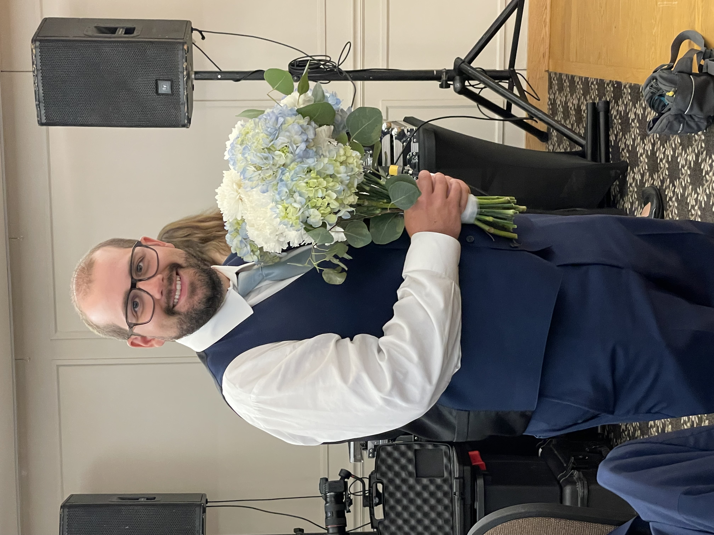
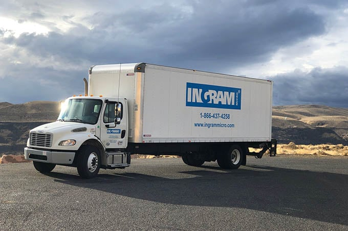

Allow Me To Reintroduce Myself
Greetings from Minnesota! I'm Alex, an aspiring software engineer currently enrolled at General Assembly. My goal is to use the skills I gain here to pivot careers and create new opportunities to pursue my passions.
My Passions
In the summer of 2018, I made the life-changing decision to leave behind my partying — and
suddenly had to rediscover what "fun" was supposed to mean to me. (spoiler: it was not
just Netflix and Call of
Duty)
I found my answer on the golf course — my sanctuary and a place that helped me heal mentally and
spiritually.
My time chasing the ball down the fairway and scrambling to save par brought me a sense
of calm and reminded me not only of what’s important in life, but who is important. I consider myself
incredibly lucky to have such a strong support system around me.
The game has given so much to me, and one day I hope to give back by organizing a fundraiser to
help
make golf more accessible for kids in my community.
When I am not on the course pretending I am better than I am, you will probably find me headbanging to
Metalcore, watching the Minnesota Wild with my dad (and questioning our life choices), cuddling my dog
Gideon🐶🛏️❤️, gaming with friends🎮, or managing one of my 25 fantasy football teams — yes, 25, because
apparently I enjoy stress.
Career At Ingram Micro
For nearly 11 years, I worked for Ingram Micro in their LifeCycle Operations division. Ingram Micro offers ITAD solutions to customers across the globe, including refurbishment, repair, and remarketing of technology products — all while prioritizing physical data security and environmental responsibility.
As a Commercial Driver
- Maintained a perfect safety record, exceeding company standards.
- Coordinated and executed complex customer-focused services across the greater Twin Cities area.
- Built a strong reputation for quality and reliability among colleagues and customers.
- Collaborated with third-party resources to better meet customer expectations.
- Proactively found solutions to save the company money, including carrying out projects that typically require two people.
I take extreme pride in the amazing things my team accomplished during my tenure with the company and am forever grateful for the experiences, lessons, and the people that made my time with Ingram Micro so special.